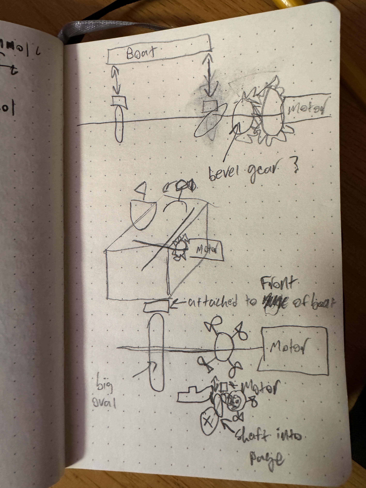
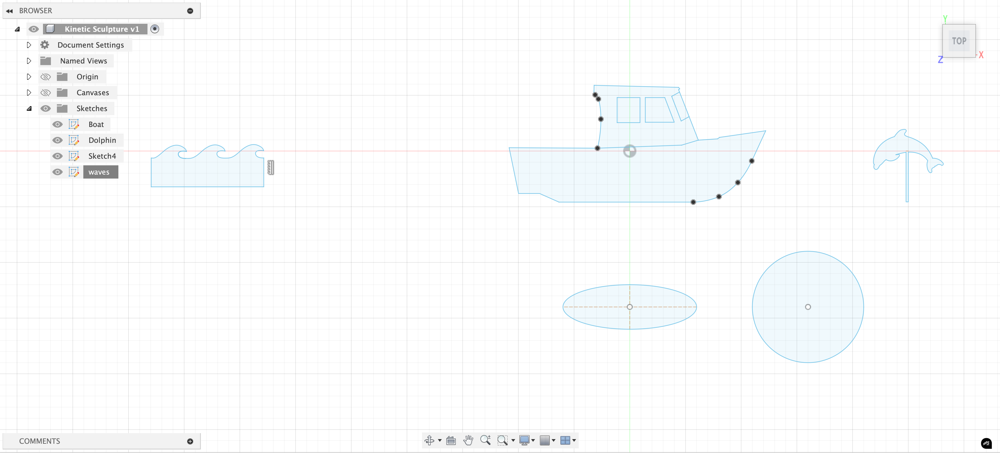
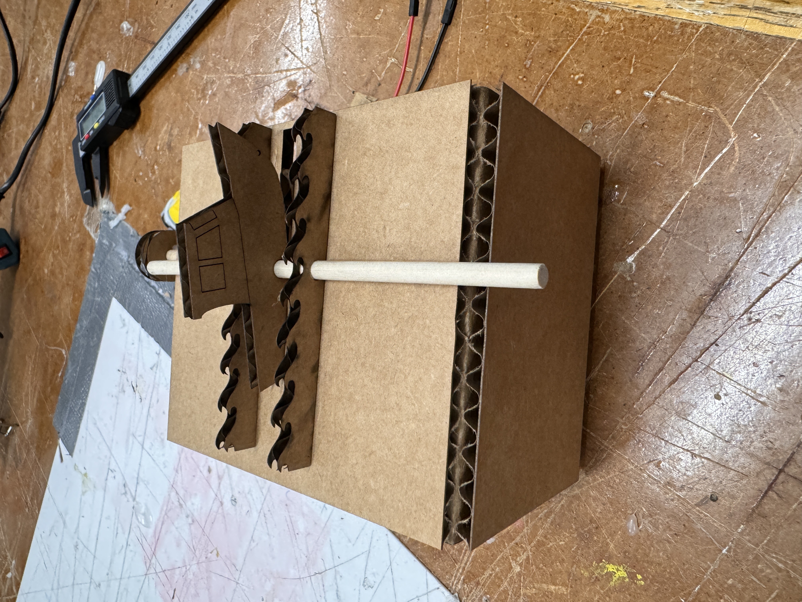
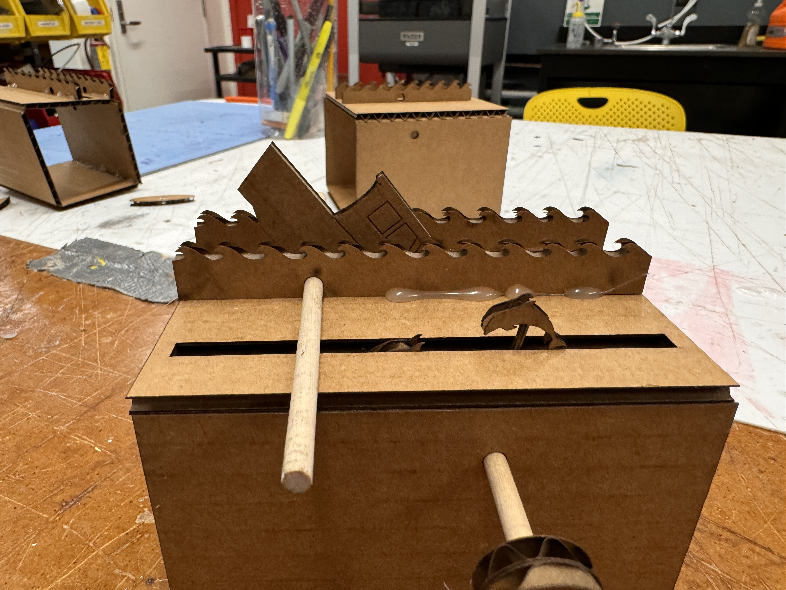
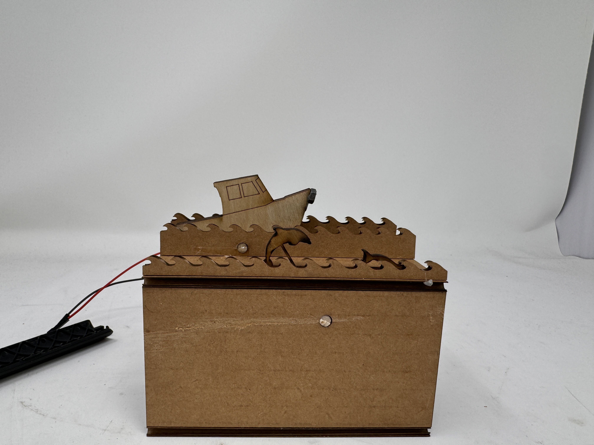
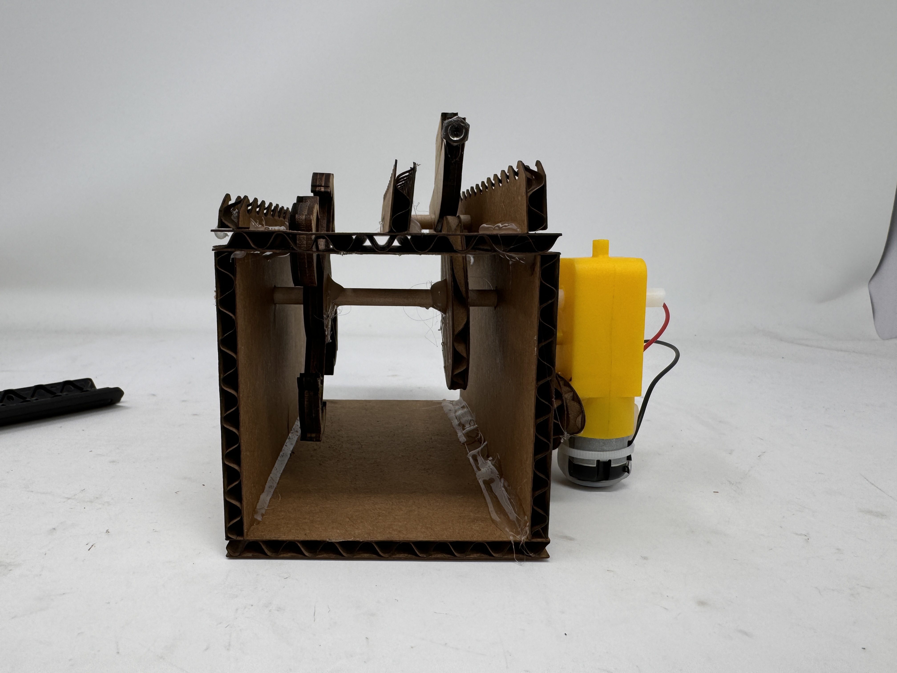
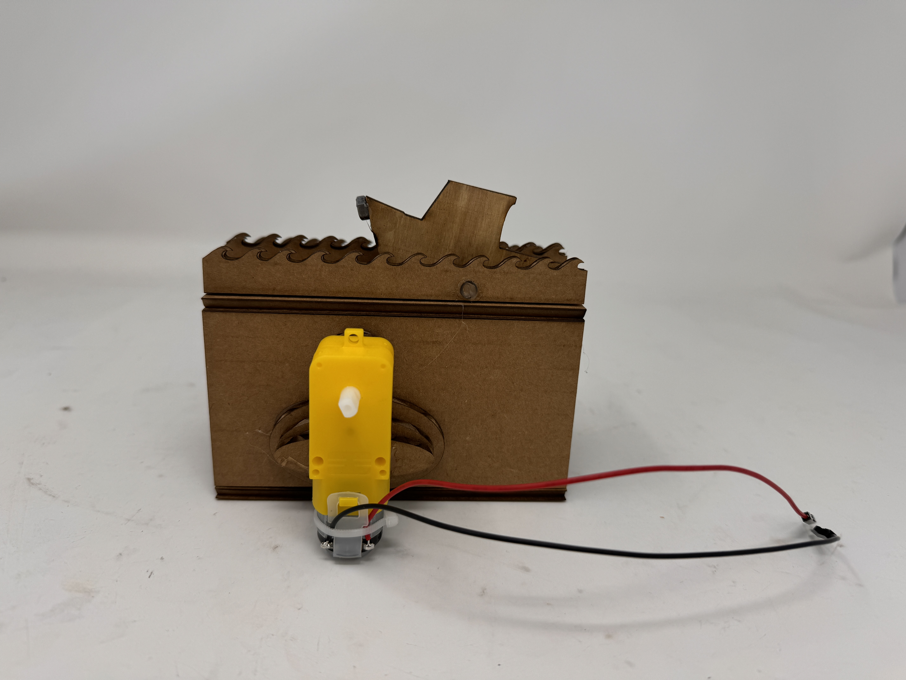

Week 3: Hand Tools and Fabrication

Kinetic Sculpture
Day 1:
Imma be so real, unfortunately my thesis is in high gear right now, so I apologize in advance for (probably) a lack of my oh-so-witty humor in my write up this week. That being said, I was super excited to try out the kinetic sculpture for this week. But, as per usual, I had next to no idea what I was doing. Drawing inspiration from my job next year where I will spend a decent amount of time on a research boat and from Mila's Stormy Seas, I decided that I wanted to make a boat rocking on the high seas as at least part of my project. My original idea for this was to have two CAM systems on either side of a cardboard cutout of a front view of a ship, where the CAMs were ovals that were offset by 90°, so the sides of the boat were rising and falling in an offset way. However, just having the boat wasn't enough for me - I wanted to see if I could add a bit more. I was thinking about maybe having the fluke of a whale appear and disappear to be a whale sighting off of the boat, but I figured that would probably just be another CAM system, which is lame. I wanted to see if I could spice it up a bit. That got me thinking like maybe flying fish, but I didn't think those would look good as a side profile, so I eventually settled on dolphins jumping out of the water. I thought that the best way to accomplish this would be to have four dolphins mounted to a circle that is just spinning, attached to the main crankshaft (for lack of a better word) via a gear. However, to make it visible from the front, it wasn't going to work out with the current orientation of the boat without the use of bevel gears, which I wasn't sure that my cardboard and wooden dowel construction would have the tolerances or structural integrity for. Because of this, I pivoted to a side view of the boat that pitches forwards and backwards via one CAM system attached to the front of the boat and the main drive shaft. I figure that my dolphin apparatus is now in the correct pivoting orientation to spin in the same plane as the boat instead of perpendicular to it, but it will need to be attached via gears. I have attached my very crude brainstorming sketches below, but they probably only make sense to me.

After deciding on the general premise/design that I wanted, I began designing some of the key components in Fusion. I brought outlines of a cartoon boat and sketch of a dolphin into Fusion as canvases, and then painstakingly traced them to the best of my ability using the spline and line tool. Moral of the story - those drawings were curvy af and that made it very tedious to accomplish this seemingly simple goal. Luckily with some good music, it went by quickly. I also figured I might want some waves as a part of this design, so I did the same thing where I brought a sketch into Fusion and traced it. At this step, my goal was mostly just to get these sketches made because I think this will be a time consuming step. I'm guessing these designs will change slightly as I go along and figure out how I am going to attach everything, but I feel like this is an important step. I also am somewhat scared of the next steps, so I might try to do those in office hours or something.

Day 2:
I went to sleep after day one blissfully dreaming of getting the most time-intensive parts done. Oh boy was I wrong. Strap in as I detail my 7 hour bender in the maker space following class on Tuesday. Right after class ended, I pulled out my computer to start cranking away at actually building this box. I was lucky that the laser cutter was back up and running at that point, so I could actually start prototyping, but once I started looking at my Fusion sketches again, I got overwhelmed. I went to Bobby and was like, how do I start this process, and he very helpfully encouraged me to start by just getting the boat moving. I am used to trying to get everything perfect the very first time, so this process was also very much so me getting comfortable with rapid prototyping and tweaking little things to see how they pan out in real life. He also told me that it might be simpler to just get the boat moving up and down, but I really wanted to get it rocking. With that in mind, I found a small wooden dowel (skewer?) that could act as both the main drive rod and as a pivot point for the boat to rock over, so I added some holes at the right height for the motor into the side of my box, as well as to the waves (which I made into a pattern and lengthened), and in the boat. From there, I printed my very first prototype! I was so full of hope that this would be close to final. Oh how I was wrong...


Honestly, all things considered, this wasn't that bad, other than the fact that I only added one hole to the box, so the dowel couldn't go all the way through. My spacing of everything was also way off - the CAM was way too long on the major axis and way too small on the minor axis, the boat was too close to the axis of rotation, the boat sat way below the waves when looking at it horizontally, and the motor attachment point was too far off the ground. Though, my motor mounting system did seem to be spot on. I had two circles of cardboard, one with a circle cutout that I hot glued to the dowel, and one with a square hole that was hot glued to the other one and meshed with the motor. This allowed the motor to turn the one with the square hole, and it transferred that to the dowel. My original plan was to have a wire or something else like that attach to the nose of the boat and attach to the CAM, but with this iteration I realized that it honestly might be better to just have the CAM interact directly with the boat. The oval structure could just push the nose of the boat up and down directly without the need for another mechanical connection that would be flimsy and could easily fail. To counteract the fact that the push and pull point won't be all the way at the nose, I moved the pivot point back on the boat so it was front heavy and would sink when it was resting along the minor axis of the CAM. I went back to Fusion, armed with a sweet pair of calipers, to set this all right. After significant tweaking and iterating, I was ready for my next prototype. Again, it fell short and the slot was the wrong dimension, the waves were still off, the scoring and breaking of the cardboard to fold it into a box wasn't looking good, and more. I decided to just try to address the wave issue first as I could easily prototype those and just remove the hot glue with a heat gun and eventually got them to a place where I was happy about them. For my third iteration, I felt that I had gotten the boat to a good enough point where I was ready to start considering the dolphins as well. By this point, it was already like 8, and I was tempted to just ignore the dolphins and be content with the boat bobbing up and down, but that wasn't enough for me. I knew that I would go home and toss and turn in bed knowing that I could've added dolphins to my kinetic sculpture but didn't because I wanted it to be done. Therefore, I persevered and continued prototyping. I made the box wider to account for the dolphins and made the waves span the whole box, and I realized that I didn't really need the dolphins on a gear system since the boat was already pretty offset from the drive axis. By having the boat interact with the CAM directly, I also was able to have the driving dowel close to the top of the box, which also meant that I could just directly connect my dolphins to that dowel, as the distance that they would need to be to be seen from the axis was less than the distance from the axis to the bottom of the box, so I could just mount them directly on the axis and have them spin with the motor and driving motion. I attached the one dolphin that I had to a circle in Fusion, and then used the circular pattern tool to put 4 onto one circle with a cutout in the middle to fit the dowel. I printed this out and put it all together with the new dimensions. Here is my first iteration of having the dolphins on the box, along with my two non-dolphin attempts in the background, as well as a peek at all the laser cutting I was doing.


This was encouraging because it like kinda worked, but still a work in progress. The dolphins were too small, the CAM system was still not quite the perfect dimensions, and the mounting point on the waves was off. I fiddled with placement of the hole on the waves by using the heat gun to move the waves around until I found a good pivot point and measured that location of the hole. I reprinted a new CAM and dolphin setup, and it was all really coming together! The new CAM was spot on, and the dolphins were just too big, but I knew the exact measurements, so I was ready to print the final iteration. I printed everything except for the boat and dolphin in cardboard because I honestly like the aesthetic of it. I needed to reprint the box because I needed to make the slits wider to account for wooden dolphins and boat, as well as a few other minor tweaks. I then printed the boat and dolphins on plywood, half because it looks cool and half to give the dolphins a little more structural integrity on the thin post attaching it to the circle. I put it all together with copious amounts of hot glue, and it looked great! I'll dive into all of the features below, but one problem that I did run into was that for some reason the wooden boat wasn't pitching forward as well as the cardboard one. I originally glued a nut onto the back of the nose of the boat so that it wasn't visible, but that threw off the balance of the pivot point, meaning that the boat would always get stuck on the slit when it was rotating. To counteract that, I hot glued the nut onto the side of the plywood, which doesn't look as nice, but I think of it like a figurehead - maybe I could 3d print something to replace the nut eventually. This works perfectly though to weight the nose, causing it to bob with the CAM and not causing it to go off the rails. I also mounted the motor using scrap cardboard and some hot glue, which isn't the most elegant solution, but it sure did work. Some pictures of the final product below!




A little recap of everything it has and how it does it:
- Oval-shaped CAM system directly drives the bobbing of the boat without any other mechanical connections between the boat and the CAM. This reduces points of failure and works better with the overall design of the sculpture. This works especially well with the wooden boat because there is less of the corrugated on corrugated friction that comes with using cardboard.
- Boat mounted on a pivot with a weighted front so that it always rests on the CAM, bobbing down with the minor axis and up with the major axis
- 4 dolphins on a circular piece that mounts directly onto the drive dowel, allowing for them to "jump" in and out of the water with the movement of the dowel. These are printed in wood for structural integrity
- Waves with pivot points in them for in front of and behind the boat, and smaller waves to put in front of the dolphins for aesthetic purposes
- A mount for the motor that consists of two pieces of cardboard, one which connects to the motor, and one that connects to the dowel that are then hot glued together to allow for transfer of movement from the motor to the dowel
- A box to house everything that has the motor mounted via hot glue on the back of it!